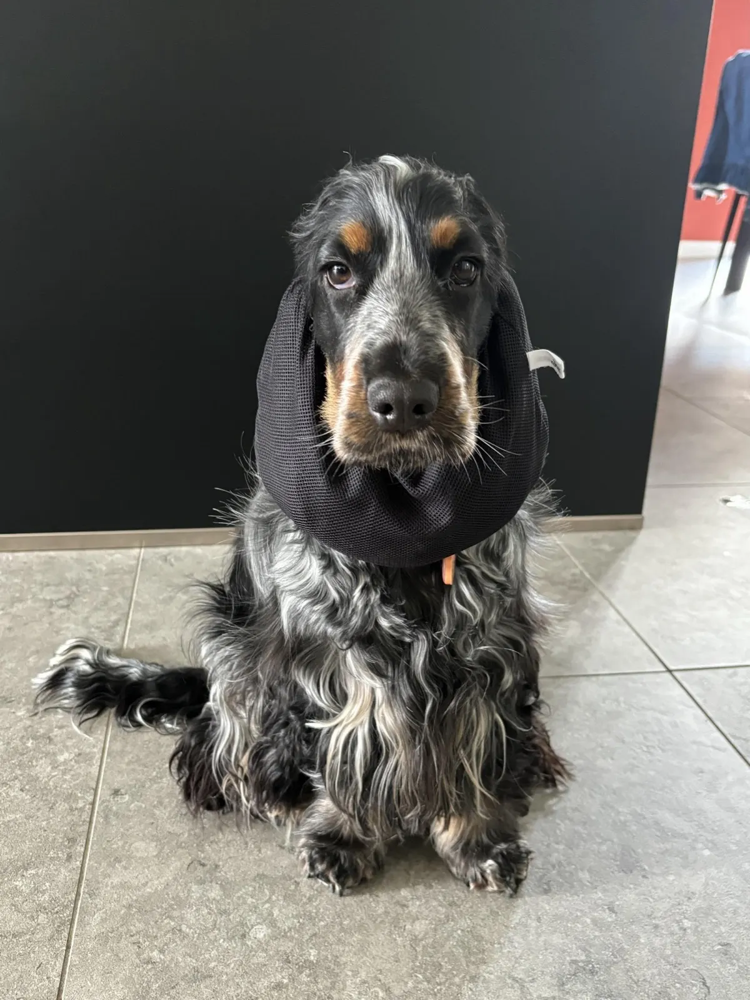
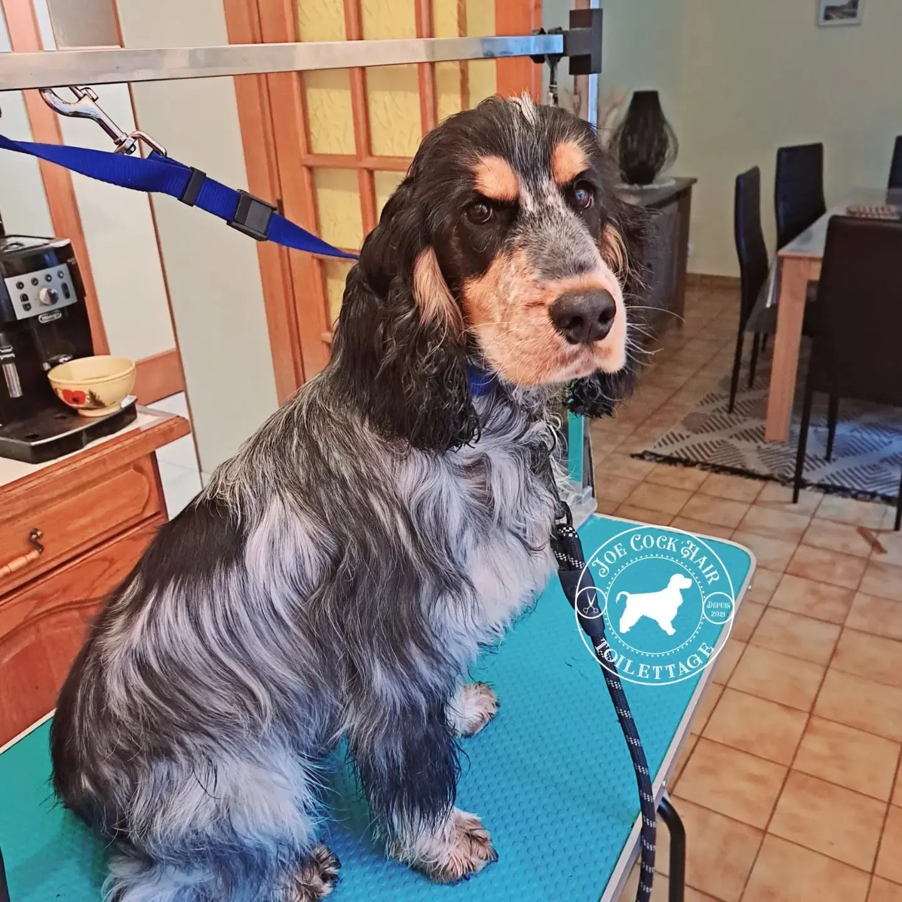
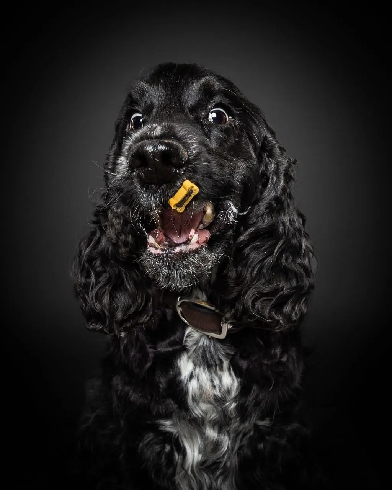
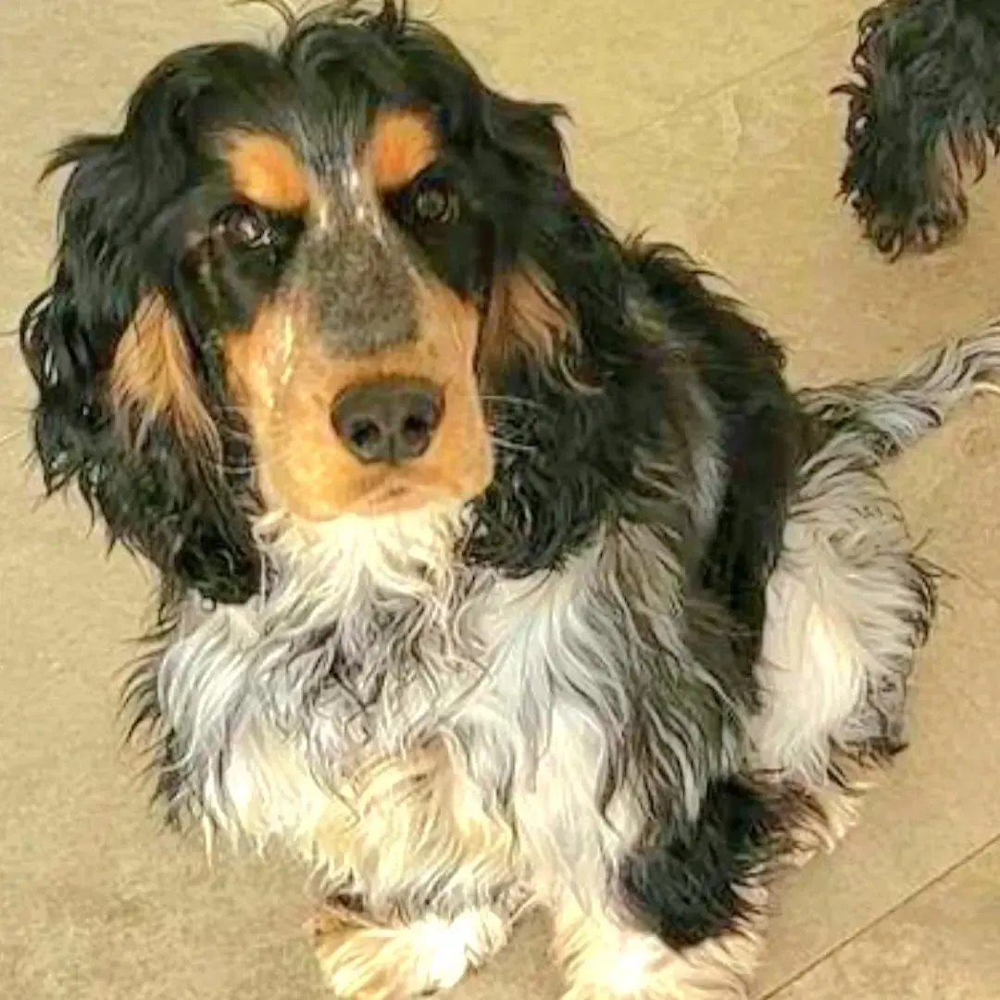
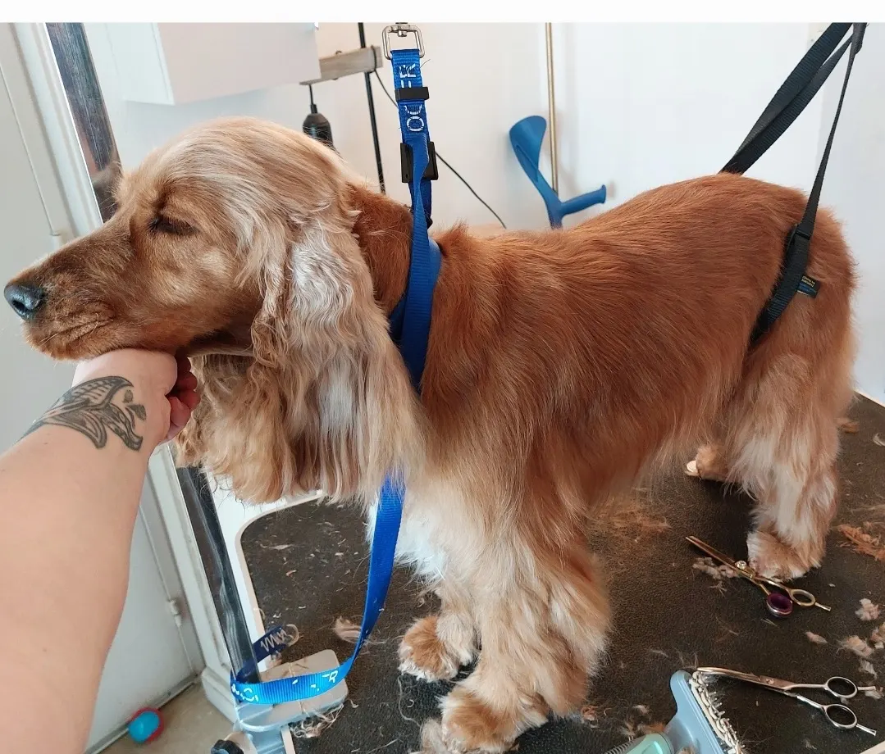
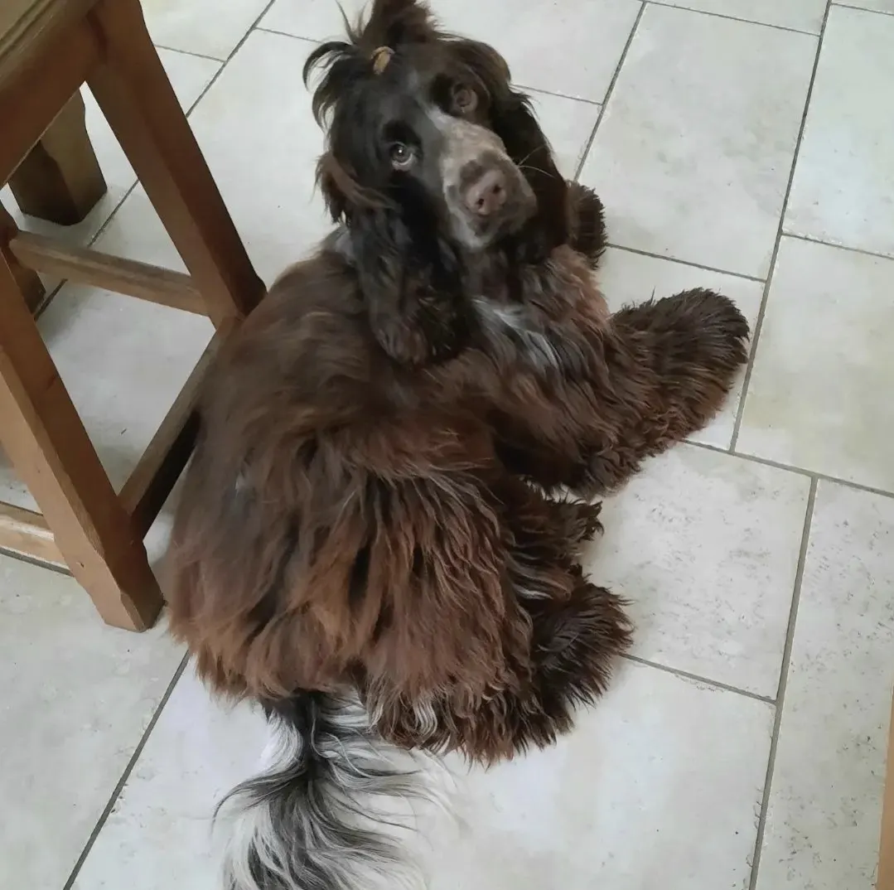
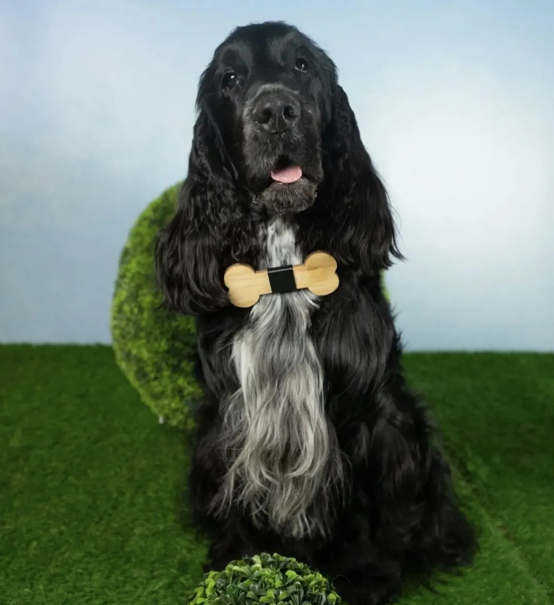
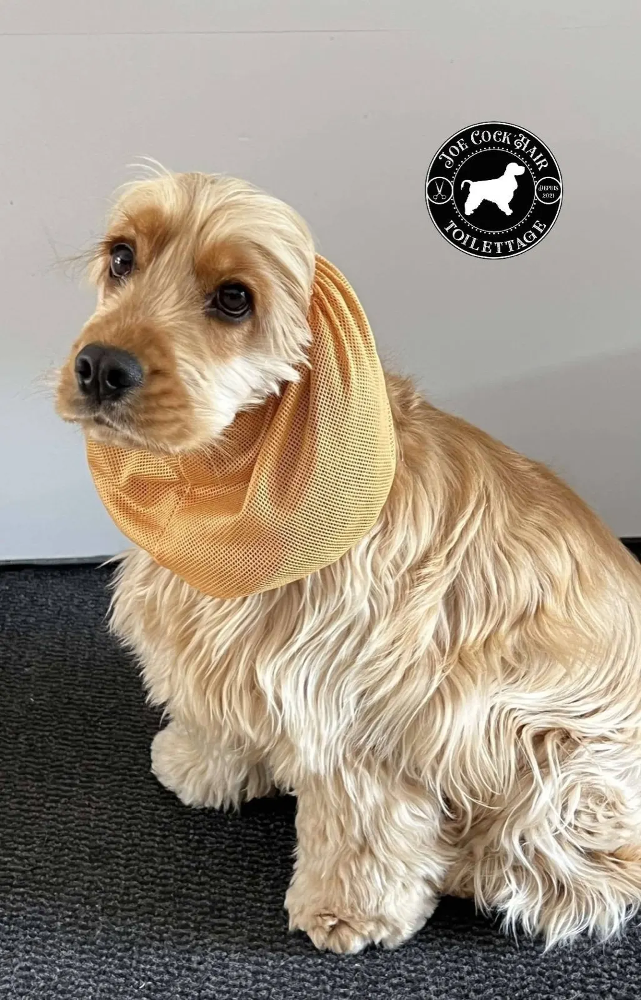
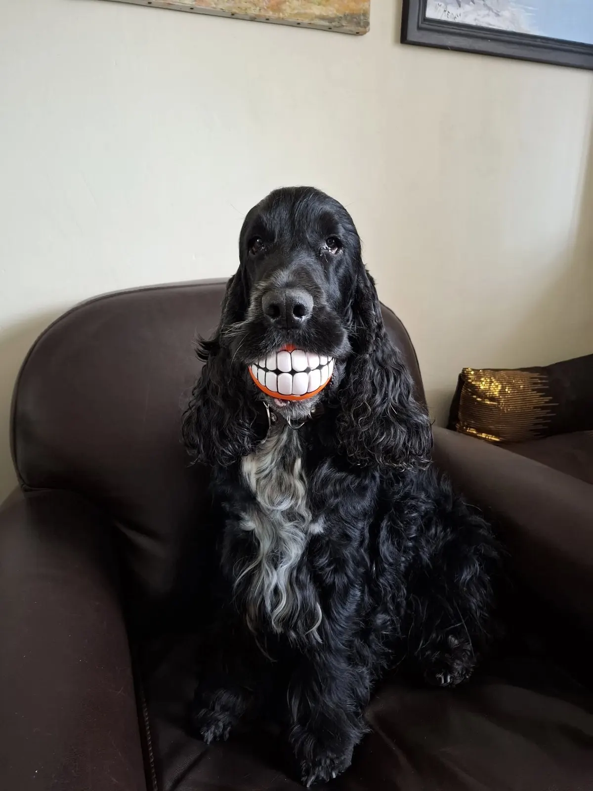

Joe Cock'Hair, toilettage à domicile depuis 2021
Le cocker anglais, toiletté à l'anglaise, chez vous.
Toilettage à domicile au nord de la Haute-Marne, depuis Chaumont. Spécialiste du cocker anglais, méthode anglo-saxonne, et formations pour les pros comme pour les particuliers.

- Depuis 2021Joe Cock'Hair Toilettage
- À domicileHaute-Marne nord, depuis Chaumont
- Méthode anglo-saxonnecockers et spaniels
- Formationspros et particuliers
- 5,0 sur 518 avis sur Google
Un poil soyeux ne se travaille pas comme un poil dur.

Épilation, carding : sur les cockers anglais et les autres spaniels, les techniques diffèrent de celles des terriers, parce que la texture du poil n'est pas la même.
- Terriers
- Un poil dur, qui se travaille avec ses propres techniques.
- Cocker anglais et spaniels
- Un poil soyeux. Les couteaux, faussement appelés trimmer : on évitera.
D'après un rappel publié par Joe Cock'Hair sur sa page.
Bleu rouan, noir, roux, chocolat, tricolore.
Quelques cockers vus sur la page de Joe Cock'Hair, de toutes les couleurs.
- Noiren studio

- Tricolore

- Rouxsur la table

- Chocolat

- Noir et blancet son os en bois


20 €le snood
Les snoods Perfecto sont de retour pour l'automne.
La vente de snoods fait partie des spécialités de Joe Cock'Hair. Le modèle Perfecto est :
- Imperméable
- Isolant
- Facile à laver
- Sur mesure
Envoi par Mondial Relay, en France et en Belgique.

Du premier toilettage du chiot aux formations.
Les chiots
Un petit bébé d'amour de 5 mois a eu droit à son premier toilettage.
Cocker Babies
Un groupe privé autour de l'éducation positive et du soin du chiot cocker anglais.
Formations
Pour les professionnels comme pour les particuliers.
Un toilettage pour votre cocker ?
Joe Cock'Hair vient chez vous, au nord de la Haute-Marne. Appelez ou écrivez pour convenir d'un passage.
Téléphone
06 44 16 94 66Secteur
À domicile, Haute-Marne nord (52), depuis Chaumont
Note Google
5,0 sur 5 · 18 avis
voir les avis
Horaires
| Lundi | 9 h – 17 h |
| Mardi | 9 h – 17 h |
| Mercredi | 9 h – 17 h |
| Jeudi | 9 h – 17 h |
| Vendredi | fermé |
| Samedi | 9 h – 17 h |
| Dimanche | fermé |